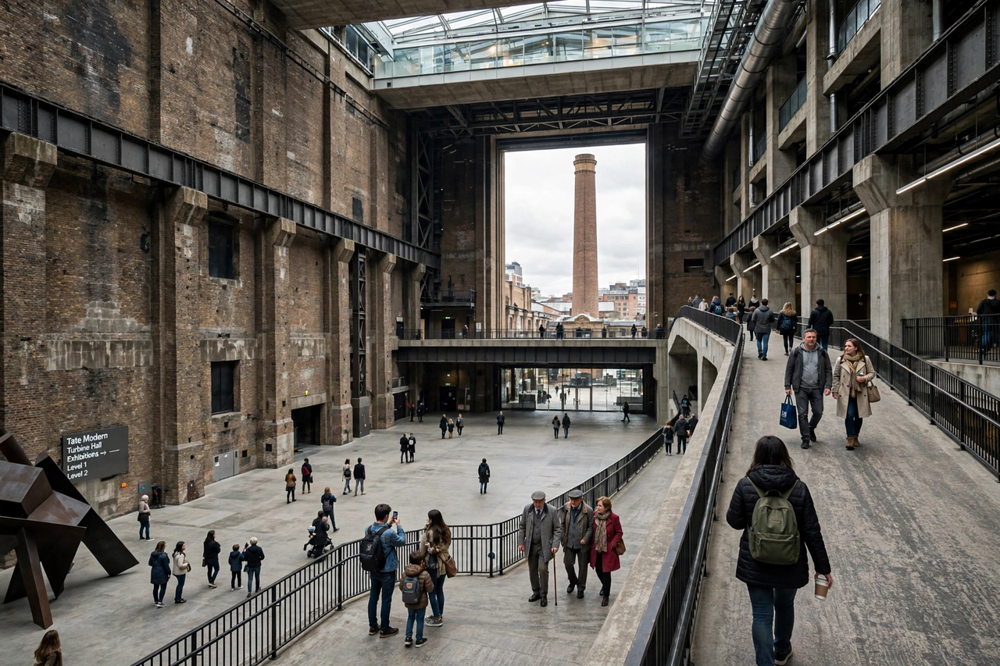

Tate

Tate is an institution that houses, in a network of four art galleries, the United Kingdom's national collection of British art, and of international modern and contemporary art. Tate galleries are Tate Britain, Tate Modern, Tate Liverpool and Tate St Ives. Tate is a non-departmental public body sponsored by the Department for Culture, Media and Sport, and admission to the permanent collections is free.
History
The original Tate Gallery opened on Millbank, London, in 1897, built with funds from sugar magnate Sir Henry Tate, who also donated his collection of British art; the sugar company Tate & Lyle's fortune underwrote the foundation. The collection grew to include the Turner Bequest and major holdings of British art from 1500 to the present. Tate Liverpool opened in the Albert Dock in 1988, Tate St Ives in Cornwall in 1993, and Tate Modern — in the converted Bankside Power Station, designed by Herzog & de Meuron — in 2000, when the Millbank site was relaunched as Tate Britain. A large extension, the Switch House (now the Blavatnik Building), opened at Tate Modern in 2016.
Activities
Tate administers the Turner Prize, Britain's best-known contemporary art award, and runs extensive exhibition, education and digital programmes. Its collection numbers tens of thousands of works and is among the most visited art institutions in the world.
See also: Turner Prize